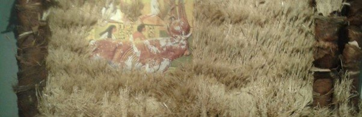
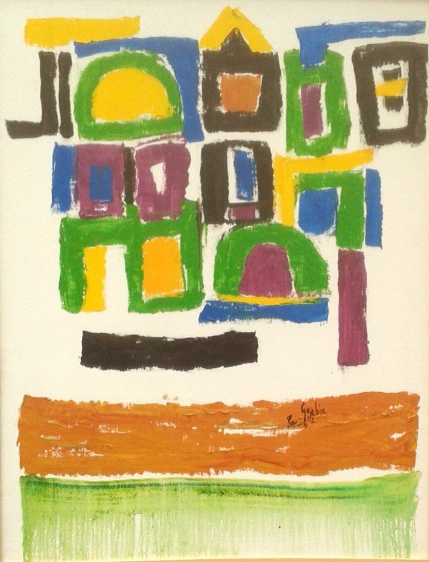
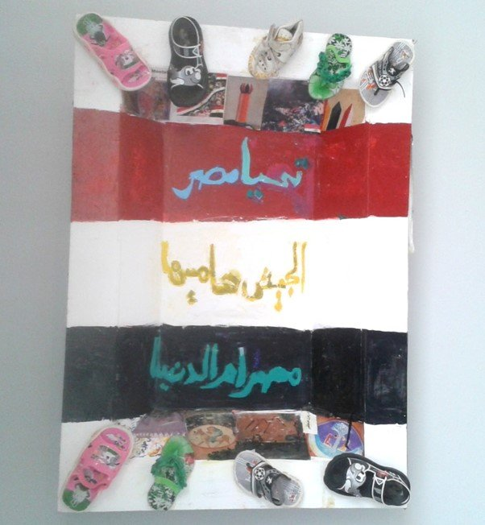
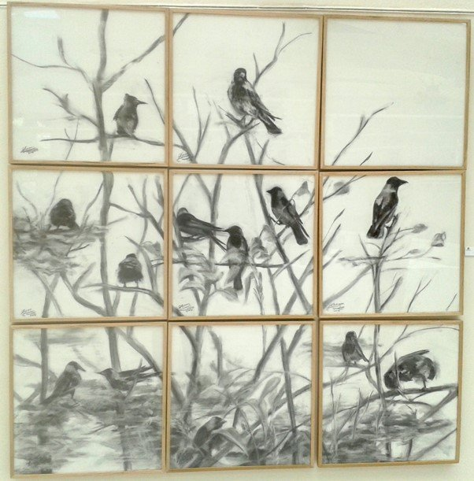

Originally published in Mada Masr on 22 June 2015
By Ismail Fayed
Nothing speaks to the trouble with the current state as much as the 37th General Exhibition (running from June 1-30) at the Palace of the Arts at the Opera House complex.
The exhibition, which requires proof of identity for admittance, has no floor plan and no brochure, only more than seven halls of over 300 artworks without titles, labels describing materials, or dates. Catalogues are only distributed to participating artists — there is no way you can procure one even if you'd pay, or so I was told by the exhibition staff.

Ahmed Abdel Kareem's "Plant your wheat O Egyptian" - example of nationalist imagery in the exhibition
The task of trying to recognize or understand a thematic or notion behind the selection and placement of the works falls to the audience. And it is not an easy task to navigate the labyrinthine structure of the Palace of the Arts across mediums, themes and chronologies (there are works dating back to 2007, according to the dates written on works by some artists).
The exhibition is considered an annual — or sometimes biennial — highlight for the plastic arts in Egypt, as its organizers accepted "recent" submissions from hundreds of working artists over 35 and handpicked the works for display. The age requirement seems strange, since most active artists lie within a much younger demographic, and they have to exhibit in annual the Youth Salon, ostensibly for young artists who have little chance to exhibit. An interesting twist this year is that a Facebook group was created for the works that were rejected, and it tried to lobby for these to be included.
The exhibition's curator (or "commissar," as the position is known in state-affiliated circles) is Mohamed Talaat (born in 1976), who is no stranger to organizing mass-scale exhibitions. He played this role in the selection committee of the General Exhibition in 2002 and 2006, as well as "What is happening now?" (2008) and "Why not?" (2010), both in the state-run Opera complex. In 2011 he left his role as director of the Palace of the Arts to start a commercial space called Gallery Misr in Zamalek.
Talaat has not articulated a particular vision, but in a recent discussion on Taha al-Korany's TV show "The Atelier" on the state-owned Nile Culture channel, he said that the selection committee (comprising former Minister of Culture Shaker Abdel Hamid, as well as artists and critics Abdel Ghafar Shedid, Mahfouz Saleeb, Mostafa Abdel Moaty, Ibrahim al-Dessouki and Yasser Mongy) outline three criteria: diversity and difference, value and originality, and the artworks' respective specificities or uniqueness.
All three criteria seemed to be challenged by the actual selection of works, which primarily use traditional mediums: painting, sculpture and a few more installation-like sculptures. The paucity of multimedia and photography (except a very few photographic works on the third floor) seems at odds with the idea of diversity and difference.
The exhibition includes some usual suspects, such as Gazebiya Sirry (born 1925), George Bahgory (born 1932), Ahmed Nawar (born 1945), Helmy al-Toony (born 1934) — usual because their work has received ample recognition from the state and they continue to benefit from the dwindling remains of its resources. But this is not the only problem about the participation of artists such as Sirry, who is widely recognized for her contributions to Egyptian art since the mid-1950s. Walking into the entrance and seeing her familiar, painterly domestic abstractions and Nawar's signature glossy, abstracted surfaces felt as if the General Exhibition was an extension of the Museum of Modern Art, which is right next door, less than 100 meters away. The Plastic Arts Sector might have even borrowed a few works from the museum to place in the General Exhibition. It seems like their presence is a way to legitimize the works of much younger artists, or secure the exhibition favor with newspaper critics and the few other individuals concerned with plastic arts.

A work by Gazebiya Sirry - veteran artist whose presence legitimizes younger works
But the sorrows of exhibiting the celebrity artists of a bygone age is nothing compared to the poor condition of many of the works. If we put aside conceptual and artistic subject matter and examine the works from a mere physical point of view, many would not pass the test of minimally proper execution, with poor quality of materials and lack of skill. This again raises the question: On what basis were works selected? Subject matter alone? Execution alone? Approach to the medium under consideration? Individual vision?
It is impossible to stop and reflect on a large figurative painting that has clearly tried and failed to grasp basic perspective and human anatomy, and appreciate it for anything else. I wondered if the works that show clear mistakes were selected based on the notion of a naïve approach to art? This is how they looked: amateurish, sometimes even juvenile.

Ramzy Mostafa's contribution - mixed-media piece with children's shoes titled "Long Live Egypt"
Or perhaps they were selected for their kitsch value — but the works seemed to take themselves too seriously to fall within the register of irony or humor. Over 10 works had the Egyptian flag as a motif (Nawar's work among them). One was a mixed-media piece with tiny children's shoes and sandals and the title Long Live Egypt (Ramzy Mostafa, born in 1926), another an oil painting of an abstracted bronze figure of a man on a grey horse, with flags flying all around (Aly Mohamed Aly Azzam, born 1929). These works are not just mediocre because they are not serious, but because in their direct, confrontational mode, devoid of subtleties, they propose that we take them seriously. But if they rely on such flimsy intellectual terrain (in the flag examples, vulgar propaganda), what are we supposed to appreciate? Technical excellence? But that was absent from most of the works.
Other works included other hackneyed tropes, such as dancing pharaohs (by Carelle Homsy, born 1968) or a naïve take on the Fayoum portraits (like in the work of Aly Said, born 1979).
Most works that are not technically unappealing fall exactly under the umbrella of what the selection committee was allegedly trying to avoid: dated and unoriginal artistic preoccupations. A statue by Gamal Abdel Nasser is something Picasso might have discarded in the 1960s, Osama Hamza Zaghloul's stack of discs supporting an egg-shaped object looks like a rough copy of Constantin Brâncuși's Beginning of the World (c. 1920), and Fathy Afifi's two large canvases showing polished, abstracted machinery is more reminiscent of early Cubism than anything else.
There were works that I found memorable: The androgynous figures in a painting by Alaa Abuel Hamid (born 1979). A black-and-white multi-panel painted landscape by Hanan al-Sheikh (born 1973), which is serene and Chinese-inspired. Iman Mounir's (born 1974) light, semi-abstracted drawings. A layered and complex painting by Islam Zaher (born 1972). Kareema Mohsen Samaha's (born 1975) portrait of a woman painted with calm and cool execution. These veered away from the typical subject matter of almost all the other works and tried to reflect each artist's own subjective interests, which might not necessarily fall under propaganda, heritage or the modernist preoccupation of depicting the machine.

Hanan al-Sheikh's contribution - serene, Chinese-inspired black-and-white multi-panel landscape
The prevalence of certain mediums over others (sculpture and painting over photography or video) or certain themes over others (ahistorical representations of the Egyptian peasantry or direct propaganda as in the case of flags), the derivative nature of many works (whether recycling of classics from the Egyptian plastic arts legacy or copies of western modernism) are all symptoms of the state's problematic relationship with the plastic arts since the 1952 post-independence government. Questions of identity and what constitutes "authentic" Egyptian art were reduced to state propaganda, or worse — unreflective borrowing of western European art historical legacies.
A particular case in point are the idealized representations of Egyptian peasantry. These are not only artistically uninteresting because they are derivative of other works (like those made by Mahmoud Moukhtar in the 1920s). They actually conceal the reality of the Egyptian working class, which has drastically transformed in the past 50 years due to massive urbanization, a state monopoly over agriculture production, the systematic destruction of farmland by the use of chemical pesticides and industrial fertilizers, and so on. Representations of the peasant currently render him or her absent through a constant reproduction of a fictitious ideal.
The artworks in the General Exhibition reveal the problems at the heart of the state-affiliated plastic arts, namely, the instrumentalization of culture as state propaganda, and the failure to provide or encourage a progressive and critical milieu in which artists can work and exhibit.
The 37th General Exhibition ran at the Palace of the Arts, Opera House complex, from June 1-30, 2015.